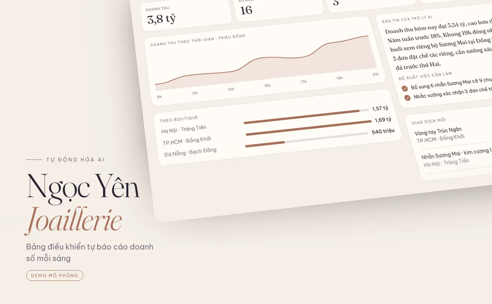

Tự động hóa AI
AI viết báo cáo kinh doanh tự động: bản tin sáng, tuần, tháng cho chủ doanh nghiệp
Chủ doanh nghiệp không cần thêm một bảng tính để mở mỗi sáng. Thứ họ cần là vài dòng nói rõ hôm qua ra sao, chỗ nào bất thường và hôm nay nên làm gì. Bài này hướng dẫn dựng bản tin quản trị do AI viết, từ chọn chỉ số đến cách chặn lỗi AI tự bịa số.

Một chuỗi ba cửa hàng trang sức có đủ dữ liệu: phần mềm bán hàng ghi từng đơn, bảng tính ghi chi phí quảng cáo, sổ kho ghi tồn. Nhưng chủ cửa hàng vẫn phải gọi cho từng quản lý để hỏi "hôm qua thế nào", vì không ai có thời gian ghép các con số lại thành một câu chuyện dễ hiểu.
Đó là chỗ AI viết báo cáo kinh doanh phát huy tác dụng. Máy gom số từ các nguồn, tính chỉ số theo công thức cố định, rồi AI viết thành bản tin ngắn gửi vào Zalo hoặc email mỗi sáng. Bài tự động hóa báo cáo, sổ sách bằng AI đã nói về cách bắt đầu và chuẩn hóa dữ liệu. Bài này tập trung vào nội dung của báo cáo quản trị: theo dõi gì, viết thế nào, và làm sao tin được nó.
Chủ doanh nghiệp nên theo dõi những KPI nào
Báo cáo hay không nằm ở số lượng chỉ số, mà ở việc mỗi chỉ số dẫn tới một quyết định. Với doanh nghiệp nhỏ, nên bắt đầu với năm đến tám chỉ số chia thành bốn nhóm:
- Bán hàng: doanh thu, số đơn, giá trị đơn trung bình, doanh thu theo kênh hoặc theo cửa hàng.
- Khách hàng: số khách mới, tỷ lệ khách quay lại, số tin nhắn hỏi hàng chưa được trả lời.
- Hiệu quả chi phí: chi phí quảng cáo trên mỗi đơn, biên lợi nhuận gộp theo nhóm sản phẩm.
- Vận hành: hàng sắp hết, đơn giao chậm, công nợ quá hạn.
Mỗi chỉ số cần ghi rõ cách tính và nguồn. "Doanh thu" là trước hay sau chiết khấu, có tính đơn hủy không, phải thống nhất từ đầu. Nếu hai người hiểu một chỉ số theo hai cách, báo cáo tự động chỉ làm rõ thêm sự nhầm lẫn.
Ba loại bản tin: sáng, tuần, tháng
Mỗi nhịp báo cáo trả lời một câu hỏi khác nhau, nên đừng gộp chung một mẫu.
| Bản tin | Trả lời câu hỏi | Độ dài |
|---|---|---|
| Sáng hằng ngày | Hôm qua có gì bất thường? | 5–8 dòng |
| Đầu tuần | Tuần qua đi đúng hướng không? | Nửa trang |
| Đầu tháng | Nên đổi gì tháng tới? | 1–2 trang |
Bản tin sáng
Ngắn, đọc trên điện thoại trong một phút. Ba con số chính của hôm qua, so với cùng thứ tuần trước, và chỉ nêu những gì lệch khỏi bình thường. Ngày mọi thứ ổn, bản tin chỉ cần một dòng "không có gì bất thường".
Bản tin tuần
Xu hướng bảy ngày, so với tuần trước và trung bình bốn tuần. Sản phẩm bán chạy, bán chậm, kênh nào hiệu quả. Kết thúc bằng ba việc nên làm trong tuần.
Bản tin tháng
So với tháng trước và cùng kỳ năm trước nếu có dữ liệu. Phân tích theo nhóm sản phẩm, theo cửa hàng, theo kênh. Đây là bản để họp, nên kèm biểu đồ và phần câu hỏi mở cho đội ngũ thảo luận.
Cảnh báo bất thường và so sánh kỳ trước
Phần giá trị nhất của báo cáo tự động thường không phải bản tin định kỳ, mà là cảnh báo đúng lúc. Một vài quy tắc đơn giản đã đủ dùng:
- Lệch khỏi mức thường ngày: doanh thu một cửa hàng thấp hơn hẳn trung bình cùng thứ của bốn tuần gần nhất.
- Vượt ngưỡng chi phí: chi phí quảng cáo trên mỗi đơn vượt mức bạn đặt trong hai ngày liên tiếp.
- Dấu hiệu vận hành: sản phẩm bán chạy chỉ còn đủ hàng vài ngày, hoặc nhiều đơn bị hủy bất thường.
So sánh kỳ trước cần đúng kiểu: thứ Hai so với thứ Hai, tháng có Tết so với tháng có Tết. So hôm nay với hôm qua thường gây báo động giả vì cuối tuần và ngày thường khác nhau. Ngưỡng cảnh báo nên được chỉnh sau vài tuần chạy thử, khi đã thấy mức dao động thật của doanh nghiệp. Nếu dữ liệu kho và đơn hàng của bạn chưa gọn, bài quản lý kho và đơn hàng tự động nói về bước chuẩn bị đó.
Cách viết khung báo cáo và prompt cho AI
AI viết hay hay dở phụ thuộc phần lớn vào khung bạn đưa. Một khung tốt gồm bốn phần:
- Vai trò và người đọc: "Bạn viết bản tin cho chủ doanh nghiệp, người đọc trên điện thoại lúc 7 giờ sáng, cần biết điều gì cần chú ý."
- Dữ liệu đầu vào: bảng số đã tính sẵn, kèm giải thích từng cột và các cảnh báo đã kích hoạt.
- Cấu trúc đầu ra cố định: tiêu đề một dòng, ba chỉ số chính, mục bất thường, mục đề xuất việc cần làm.
- Quy tắc cấm: không đưa con số không có trong dữ liệu, không suy đoán nguyên nhân nếu không có căn cứ, ghi "chưa rõ nguyên nhân" khi cần.
Phần đề xuất việc cần làm nên bám vào danh sách hành động bạn cho phép, ví dụ "nhắc quản lý cửa hàng kiểm tra", "xem lại nhóm quảng cáo", "đặt thêm hàng". Như vậy AI gợi ý trong phạm vi doanh nghiệp thực sự làm được, thay vì lời khuyên chung chung.
Giọng văn cũng nên quy định: câu ngắn, dùng tên cửa hàng và tên sản phẩm quen thuộc trong nội bộ, không dùng thuật ngữ mà người đọc không dùng hằng ngày.
Kiểm soát lỗi AI bịa số
Mô hình ngôn ngữ giỏi viết nhưng không đáng tin khi tự cộng trừ. Nguyên tắc cốt lõi là máy tính số, AI viết lời.
- Tính toán ngoài AI: mọi con số, phần trăm thay đổi, xếp hạng đều được tính bằng công thức trong bảng tính hoặc luồng tự động, rồi mới đưa cho AI.
- Kiểm tra sau khi viết: một bước tự động dò mọi con số trong bản tin AI viết, nếu có số không xuất hiện trong dữ liệu đầu vào thì bản tin bị giữ lại.
- Đính kèm số gốc: bản tin có đường dẫn tới bảng số để người đọc kiểm tra khi cần.
- Người duyệt giai đoạn đầu: vài tuần đầu, một người đọc trước khi gửi. Khi bản tin ổn định, chuyển sang gửi tự động và chỉ kiểm tra ngẫu nhiên.
Mẹo: yêu cầu AI dùng đúng định dạng số như trong dữ liệu đầu vào. Khi AI không phải làm tròn hay đổi đơn vị, khả năng sai lệch giảm rõ rệt và bước kiểm tra tự động cũng dễ hơn.
Chi phí và gói phù hợp
Tại Dream Labs, AI tự viết báo cáo tuần, tháng là một phần của gói Tăng trưởng 15.000.000đ, cùng với 3 quy trình tự động (đơn hàng, chăm sóc khách hàng, sổ sách và báo cáo), kết nối CRM, phần mềm bán hàng, kế toán và đào tạo đội ngũ vận hành. Nếu bạn cần dashboard điều hành thời gian thực, AI viết báo cáo và lập kế hoạch kinh doanh cho nhiều bộ phận, gói Doanh nghiệp từ 40.000.000đ trở lên phù hợp hơn.
| Gói | Giá | Thời gian | Bao gồm |
|---|---|---|---|
| Khởi động | 5.000.000đ | 5–7 ngàyHỗ trợ 1 tháng | Không bỏ lỡ khách nhắn ngoài giờ, nhân viên thôi trả lời lặp lại, mọi khách mới nằm gọn trong một bảng.
|
| Tăng trưởngPhổ biến nhất | 15.000.000đ | 14 ngàyHỗ trợ 3 tháng | Đơn hàng, chăm sóc khách và báo cáo tự chạy: dữ liệu nhập một lần, đội ngũ dành giờ cho tư vấn và chốt đơn.
|
| Doanh nghiệp | 40.000.000đ trở lên | 30+ ngàyHỗ trợ 12 tháng | Một hệ thống vận hành riêng: xem số liệu theo thời gian thực, mở rộng quy mô mà không phải tăng người tương ứng.
|
Luồng gom số và gửi bản tin thường được dựng bằng n8n, xem thêm tại trang dịch vụ n8n. Chi tiết các gói có tại bảng giá và trang dịch vụ tự động hóa quy trình doanh nghiệp. Nếu số liệu tài chính của bạn còn phụ thuộc nhiều vào nhập tay, nên đọc thêm bài tự động hóa kế toán bằng AI. Muốn xem thử một khung bản tin cho trường hợp của bạn, nhắn Zalo 0934 246 420.
Câu hỏi thường gặp
AI có tự đọc được dữ liệu từ phần mềm bán hàng không?
AI không tự vào phần mềm. Luồng tự động lấy dữ liệu qua kết nối hoặc file xuất của phần mềm, tính chỉ số, rồi mới đưa bảng số cho AI viết. Phần mềm nào cho phép xuất dữ liệu thì đều làm được.
Báo cáo kinh doanh do AI viết có chính xác không?
Con số chính xác khi được tính bằng công thức và có bước kiểm tra tự động trước khi gửi. Phần diễn giải của AI nên được người duyệt trong vài tuần đầu cho tới khi ổn định.
Nên gửi báo cáo qua Zalo hay email?
Bản tin sáng ngắn hợp với Zalo vì đọc nhanh trên điện thoại. Bản tin tháng dài, có biểu đồ, hợp với email hoặc một trang báo cáo riêng.
Doanh nghiệp nhỏ có cần dashboard không hay chỉ cần bản tin?
Phần lớn doanh nghiệp nhỏ bắt đầu bằng bản tin là đủ. Dashboard hữu ích khi có nhiều chi nhánh, nhiều người cần xem số cùng lúc hoặc cần lọc theo nhiều chiều.
Bao lâu thì có bản tin tự động đầu tiên?
Gói Tăng trưởng triển khai trong khoảng 14 ngày. Thời gian thực tế phụ thuộc vào số nguồn dữ liệu và mức độ thống nhất của dữ liệu đó.
Bắt đầu cùng Dream Labs
Muốn mỗi sáng nhận một bản tin kinh doanh đáng đọc?
Nhắn Zalo cho Dream Labs các chỉ số bạn đang theo dõi và nơi dữ liệu đang nằm. Chúng tôi đề xuất khung bản tin, lịch gửi và chi phí triển khai rõ ràng.